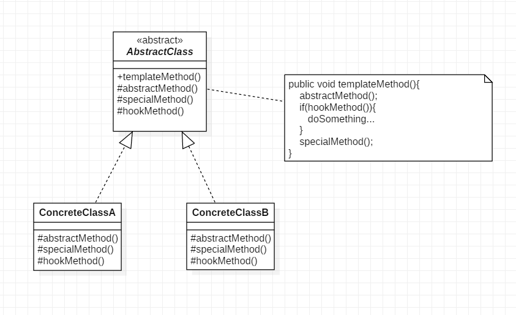

模板方法模式是: 定义一个操作中的算法骨架，而将算法的一些步骤延迟到子类中，使得子类可以不改变该算法结构的情况下重定义该算法的某些特定步骤。它是一种类行为型模式。
模板方法模式中有一个关键的角色:抽象类. 在EffectiveJava中将其称为骨架类
角色
UML
)
代码
public abstract class AbstractClass {
protected abstract void abstractMethod();
protected abstract boolean hookMethod();
protected void specialMethod(){
System.out.println("abstract");
}
public final void templateMethod(){
abstractMethod();
if(hookMethod()){
System.out.println("hook it.");
}
System.out.println("do something...");
specialMethod();
}
}
public class ConcreteClassA extends AbstractClass {
@Override
protected void abstractMethod() {
System.out.println("a do!");
}
@Override
protected boolean hookMethod() {
return false;
}
@Override
protected void specialMethod(){
System.out.println("a!");
}
}
public class ConcreteClassB extends AbstractClass {
@Override
protected void abstractMethod() {
System.out.println("b do!");
}
@Override
protected boolean hookMethod() {
return true;
}
}
client:
public static void main(String[] args){
AbstractClass objA = new ConcreteClassA();
AbstractClass objB = new ConcreteClassB();
objA.templateMethod();
System.out.println("----------------");
objB.templateMethod();
}
优点
缺点
个人认为模板方法模式的缺点就是:提高了代码阅读的难度